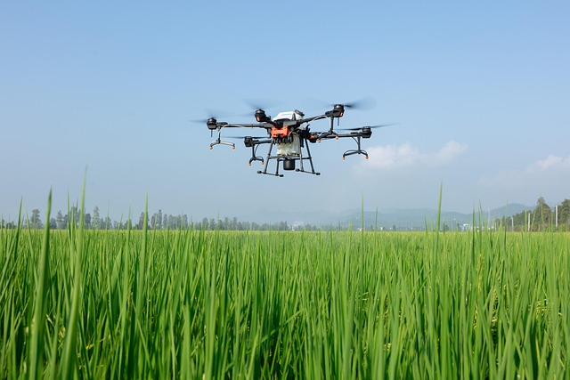

AgroVision
A tecnologia orbital impulsionando a agricultura sustentável na Terra.
Conheça a soluçãoNossas Soluções Corporativas
Monitoramento Climático
Previsões de altíssima precisão baseadas em telemetria orbital contínua.
Irrigação Inteligente
Análise do índice de estresse hídrico do solo diretamente do espaço para evitar desperdícios.
Alertas Ambientais
Notificações imediatas sobre riscos iminentes de geadas, secas ou queimadas.
Inteligência Artificial e Análise Agrícola
Combinamos o poder de processamento de Big Data com algoritmos avançados de IA para analisar constelações de imagens de satélite LEO.
Nosso ecossistema conta também com um Chatbot integrado capaz de sugerir correções de manejo de solo em tempo real para os produtores parceiros.
